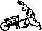

Technological resilience research, aboard a sailboat.
Hundred Rabbits is a collective exploring the planned failability of modern technology at the bounds of the hyper-connected world. We explore low-tech solutions and document our findings with the hope of building a more resilient future.
We live and work on a 10 meters vessel called Pino, we have sailed around the Pacific Ocean and realized how fragile the modern-day computing stack was. Living in remote uninhabited parts of the world has offered us a playground to learn how technology degrades beyond the shores of the western world.
Wish good-bye to the poor hare,
and come and look for blackberries.
This partnership is host to creative interactive projects like RabbitWaves, Grimgrains, Oquonie and Uxn.
The name Hundred Rabbits comes from the name of the sailboat in the animated show Ergo proxy, while the sailboat's name Pino comes from the android sailor aboard the sailboat from that same show.
Elil, Enemies Of Rabbits, a term that refers to the natural enemies of rabbits and also to humans, who are regarded as one of the Thousand Enemies.


19X01— 10 Years Anniversary09X01— Founded Hundred Rabbits
incoming: roms donsol famicom oquonie playdate lifestyle faqs devine lu linvega computer events deliberate devlog 2025 2023 goals rekka drownspire pino